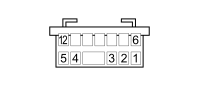

D162 OPTIONAL DASHBOARD/LEFT REAR COUPLING (OPTIONAL DASHBOARD)
- Path
- Electrical equipment > 3 CONNECTORS > D INTERMEDIATE COUPLINGS > D162 OPTIONAL DASHBOARD/LEFT REAR COUPLING > D162 OPTIONAL DASHBOARD/LEFT REAR COUPLING (OPTIONAL DASHBOARD)
- Kind
- connector pinout (pin -> wire colour -> other end)
- Applies to
- all engines; all production periods; only with equipment: Minibus and Van and Panorama and Combi
- Interactive page
- https://sloeber94.github.io/elrnDB-fDct/en/#/244002852
Applies to: all engines; all production periods; only with equipment: Minibus and Van and Panorama and Combi

Wiring | Colour |
|---|---|
BIANCO (white) |
Topics linked from this page (13)
- 19 OPTIONAL DASHBOARD
- B101B OPTIONAL JUNCTION UNIT UNDER THE DASHBOARD (OPTIONAL DASHBOARD)
- D016A ADDITIONAL DASHBOARD/LEFT FRONT DOOR COUPLING (OPTIONAL DASHBOARD)
- D017A ADDITIONAL DASHBOARD/RIGHT FRONT DOOR COUPLING (OPTIONAL DASHBOARD)
- D097E SHORT CIRCUITING COUPLING (OPTIONAL DASHBOARD)
- D097G SHORT CIRCUITING COUPLING (OPTIONAL DASHBOARD)
- D097I SHORT CIRCUITING COUPLING (OPTIONAL DASHBOARD)
- D160B DASHBOARD/OPTIONAL DASHBOARD COUPLING (OPTIONAL DASHBOARD)
- D172A RIGHT REAR/OPTIONAL DASHBOARD COUPLING (RIGHT LONGITUDINAL)
- D175 DASHBOARD/PASSENGER COURTESY LIGHT COUPLING
- H005D STEERING COLUMN SWITCH UNIT (OPTIONAL DASHBOARD)
- H007A CRUISE CONTROL SYSTEM CONTROL (OPTIONAL DASHBOARD)
- M120D Connect front panel (OPTIONAL DASHBOARD)